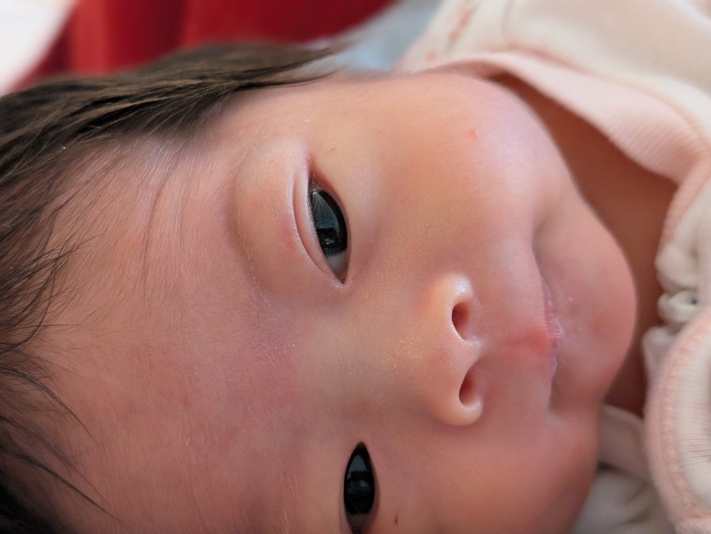

Author: Evelyn
Throughout our journey we have been showered with love from our friends and family's thoughtful messages and prayers. Not to also mention those who are in proximity offering immediate help. We are extremely thankful for the support. Never had I thought that our baby would die, but never have I been so thankful of the love and friendship from those around us.
I promise that the next posts will happier than this post, but many are interested in learning what happened that evening. On Thursday 3/13, around 5:50pm, I was returning home from picking up our big girls (Annie and Abby) from dance. Onboard, there was me (driver), Annie & Baby Ce (2nd row), and Abby (3rd row). As we were halfway through crossing a 4 way stop, an SUV ran their stop-sign and T-boned the van. One minute we were talking about the big girls' upcoming birthday party, and the next we were hit. The SUV was traveling so fast that their car flipped upside down after hitting us.
As I tried to turn to see my girls, I saw my 10 year old dangling limp and the baby carrier was silent. I couldn't see our 8 year old on the 3rd row but at least she was wailing in pain. Panic set in. I struggled reach the girls but my chest hurt so bad that I couldn't turn enough. I shrieked at my limp 10 year old, begging her to please wake up. I rock the baby carrier, trying to get a reaction out of the baby.
At this point several bystanders had crawled into our car desperately trying to help. I remember crying out, "get me my baby, please, just get my baby" and finally a very helpful nurse was able to get to my sweet Ce and remove her from the car seat. I reached for the baby, pleading, "please give me my baby." But when the nurse's looked up at me, I knew--I knew something was very wrong. PLEASE PLEASE I started wailing. I JUST WANT TO HOLD MY BABY. But Ce was quickly handed to the EMS and gone from my sight. Some time around then, my husband Yih-Chun arrived on scene and dashed after the baby. Someone was finally able to extract me out of the car and while I hurt so bad I just wanted to get to my girls. But when the first ambulance door opened, into my eyes I saw my sweet baby Ce, laying naked on the cot, getting chest compressions. Dread, terrible dread.
They quickly shut the ambulance door and lead me to another ambulance where later our 10 year joined me. I prayed, knowing the situation is bad. But funny how our brains work, intrusive thoughts of "glad that we've met our deductible this year" and "well, I guess we'll have to get a new car" "I need to cancel violin classes" kept bubbling out of my mind. Many many more random thoughts came to me, keeping my mind occupied. For a moment I could even laugh.
Yet reality can't be shut out forever. As we arrived in the ER, I saw our brave Abby was laying by herself on a cot with her shoulder and hip extensively purple and blue; meanwhile Annie's X-ray showed a clearly fractured collarbone and wrist. I went back and forth between the big girls until they made me lay down, realizing that I had a C3 neck fracture.
Meanwhile, Yih-Chun was with Ce. I knew it was bad but I've seen babies in terrible conditions recover. I didn't know how she was doing and still held a glimmer of hope that flying her down to St. Louis would give her access to surgeons who can keep her alive.